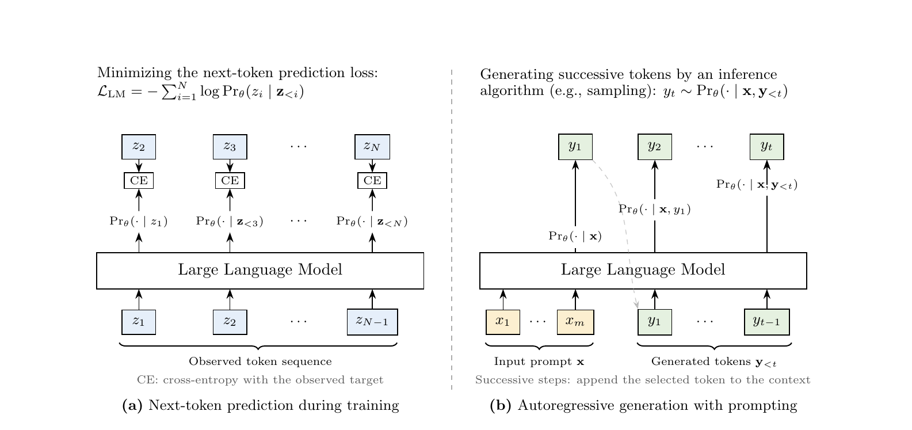
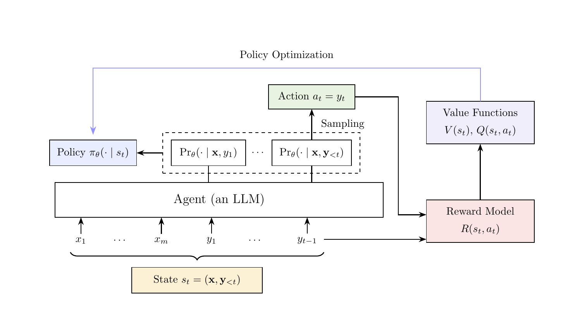

Preliminary
LLM 已成为现代自然语言处理的基础。它们的成功在很大程度上遵循一个简单而强大的范式：先从大规模文本语料中学习通用语言能力， 再通过提示或监督微调把这些能力适配到具体任务。推理时，LLM 根据给定输入与此前已生成的词元、按顺序预测词元来生成输出。 这一范式深刻改变了 NLP 系统的研发方式：不再为每个任务专门建模，而是用一个统一的基础模型支撑广泛的语言理解与生成任务。
在引入面向 LLM 的强化学习之前，先理解这些基本机制非常重要。许多强化学习概念都能自然地对应到 LLM 的标准生成过程： 输入与已生成的词元定义了当前上下文，下一词元分布决定了模型可能的动作，完整输出则构成一条可以被奖励信号评估的决策序列。 本节简要回顾 LLM 的基础，并介绍全文使用的关键概念与记号。我们只关注理解后续强化学习讨论所必需的内容， 不打算对 LLM 技术及其最新进展做全面综述；想系统了解 LLM 的读者可参阅 Xiao & Zhu（2025）。
本文主要讨论基于仅解码器（decoder-only）Transformer 的生成式 LLM（Vaswani et al., 2017）。 用 \(\mathcal{V}\) 表示词表。词元是 LLM 处理的基本单位，可以是单词、子词、标点，或分词器产生的其他文本片段。 原始文本输入 LLM 前，先由分词器转换成形如 \(z_1\ldots z_N\) 的词元序列。因此全文中，LLM 的输入与输出一律表示为词元序列。 给定词元序列 \(\mathbf{z}=z_1\ldots z_N\)，以 \(\theta\) 参数化的语言模型把它从左到右分解，逐词元估算序列概率：
其中 \(\mathbf{z}_{\lt i}=z_1\ldots z_{i-1}\) 表示 \(z_i\) 之前的词元。仅解码器 Transformer 用因果自注意力实现这一条件分布， 使每个位置的预测只能依赖前面的词元。模型对词表 \(\mathcal{V}\) 产出概率分布，记作 \(\mathrm{Pr}_{\theta}(\cdot\mid\mathbf{z}_{\lt i})\)。这一“下一词元预测”的视角是 LLM 被训练、被提示、被微调、 进而被强化学习优化的核心接口。图 1 展示了这一过程，并附上基于提示的自回归生成。训练时，预测出的分布与观察到的目标词元比对； 推理时，每一步选中的词元拼接到上下文，再用于条件化下一次预测。

预训练是构建多数 LLM 的第一阶段。目标是让模型在大规模无标注文本上训练，从而获得关于语言与世界的通用知识。 在生成式 LLM 中，这通常通过自监督的下一词元预测实现：模型观察前文词元并学习预测下一个词元。虽然不需要人工标注标签， 文本中的每个词元天然就是监督信号——以左侧上下文预测自身。
用 \(\mathcal{S}_{\mathrm{pre}}\) 表示预训练语料，其中每个样本都是词元序列 \(\mathbf{z}=z_1\ldots z_N\)。 预训练的目标是最大化语料中所有词元的对数似然：
其中 \(\hat{\theta}\) 表示优化后的预训练参数。等价地，这一目标也可看作最小化观察到的下一词元与模型预测分布之间的交叉熵损失。
预训练之后，LLM 学会了对自然语言建模，并从大规模文本中吸收了大量语言知识与事实知识。给定前文上下文，它能预测合理的续写、 生成流畅文本。例如，给定前缀 “The capital of France is”（法国首都是），预训练 LLM 会给下一个词元 “Paris” 很高的概率； 给定更长的上下文如 “To solve this equation, we first move all terms to one side”（要解这个方程，我们先把所有项移到一边）， 模型能续写出语言与语义上都合理的文本。这些例子说明了预训练学到的核心能力：从上下文中预测可能的续写。
然而，预训练主要教会模型的是“为语言建模”，而不是“解决指定任务”。具体而言，模型并没有被直接训练去理解指令、 或以期望的格式产出输出。因此，仅仅给预训练 LLM 一段任务说明，未必能引导出期望的行为。这一局限促使我们采用额外的适配方法， 让预训练 LLM 更好地服务下游任务。
提示是一种简单轻量的方式，不更新参数就能让 LLM 适配不同任务。提示（prompt）是用来引导模型完成某个任务或产出某种输出的输入文本。 它可以包含指令、用户提供的内容、输出要求或示范示例。例如，如果想让 LLM 充当作业辅导助手来回答学生的问题，我们可以提供如下提示：
在这个示例中，提示同时规定了任务与期望的回答风格。LLM 随后通过续写输入序列来生成回答。提示也可以由模板构造。 提示模板（prompt template）带有可替换为任务相关信息的占位符。例如，对作业辅导助手我们可以用下面这个模板：
若把 {*subject*} 设为 “math”（数学），这个模板就变成了上面那条提示。这样，用户在保持主任务描述不变的同时， 只需替换占位符就能构造出针对不同任务的提示。
与提示相关的另一个重要概念是上下文学习（in-context learning）。给 LLM 写提示时，我们可以把示范示例加入上下文， 让模型从这些示例中推断期望的输入-输出模式。例如，先向模型展示如何回答类似的学生问题，再请它回答新问题：
当提供单个示范时，这一设定通常称为单样本（one-shot）提示；当包含若干示范时，称为少样本（few-shot）提示。 相反，不提供任何示范的提示通常称为零样本（zero-shot）提示。
上下文学习也可以与思维链（chain-of-thought，CoT）提示结合（Wei et al., 2022b）。其基本思想是鼓励模型在给出最终答案之前 先生成中间推理步骤。做法可以是明确要求模型逐步推理，也可以是提供同时包含推理轨迹与答案的示范示例。例如：
提示是通过改变生成所用的上下文来适配 LLM 的，因此提示质量会强烈影响模型表现。即便是同一个任务，提示也可以有很多不同的写法。 例如，“Give me two tips to improve my English writing.”（给我两条提高英语写作的建议）也可以写成 “What are two simple ways to improve my English writing skills?”（提高英语写作能力的两个简单方法是什么？）。 两个提示表达的意图几乎相同，输出却可能明显不同。实践中，人们常针对给定的 LLM 通过反复试错来打磨提示。 更多先进方法用强化学习（Deng et al., 2022）或进化算法（Guo et al., 2024）等技术自动搜索更好的提示。
尽管预训练 LLM 拥有海量通用知识，它们的能力通常局限于语言建模相关任务。我们的最终目标是让它们完成各种具体任务， 例如摘要、问答与机器翻译。实现这一目标最直接的方法是监督微调（supervised fine-tuning，SFT）： 在包含任务相关输入（即“指令 + 用户输入”）1 与其期望输出配对的数据集上，对预训练 LLM 进一步训练 （Ouyang et al., 2022; Wei et al., 2022a）。表 1 给出了不同任务的 SFT 数据示例。
具体地，令 \(\mathbf{x}=x_1\ldots x_m\) 为输入，\(\mathbf{y}=y_1\ldots y_T\) 为对应输出。SFT 的目标是在给定输入 \(\mathbf{x}\) 时最大化输出 \(\mathbf{y}\) 的概率。考虑一个预训练参数为 \(\hat{\theta}\) 的 LLM，微调目标可形式化为：
其中 \(\mathrm{Pr}(\cdot)\) 表示概率分布，\(\mathcal{S}\) 表示带标注数据，\(\tilde{\theta}\) 表示经 SFT 优化的参数， \(\hat{\theta}^{+}\) 表示在 \(\hat{\theta}\) 基础上的调整。为保持记号简洁，后文将省略上标 \(+\)、直接用 \(\theta\) 表示 \(\hat{\theta}^{+}\)。但请读者记住：微调是从预训练参数出发，而非随机初始化。
目标函数 \(\log \mathrm{Pr}_{\theta}(\mathbf{y}\mid\mathbf{x})\) 由输出 \(\mathbf{y}\) 中各词元的对数概率相加而得； 每个词元以输入 \(\mathbf{x}\) 与全部此前的输出词元 \(\mathbf{y}_{\lt t}\) 为条件：
这一表述等价于在输出段上最小化交叉熵损失。实践中，输入 \(\mathbf{x}\) 中的词元只作为上下文， 损失通常只在输出词元上计算。
1 本文中，指令（instruction）指对特定任务的描述，如“总结下面的文章”；用户输入（user input）指附加在指令之后的内容， 如“文章：近年来，太阳能可供应量显著增长，增速前所未有，已成为增长最快的……”
| \(\mathbf{x}\)（指令 + 用户输入） | \(\mathbf{y}\)（输出） |
|---|---|
| 摘要：总结下面的文章。 文章：近年来，太阳能可供应量显著增长，已成为增长最快的可再生能源之一。 |
Solar energy has grown rapidly in recent years and has become a major renewable energy source. （太阳能近年来快速增长，已成为一种主要的可再生能源。） |
| 问答：回答下面的问题。 问题：法国首都是哪里？ |
Paris.（巴黎。） |
| 分类：把下面的消息分为垃圾信息或非垃圾信息。 消息：恭喜！您中了 500 美元礼品卡，点击领取。 |
Spam.（垃圾信息。） |
| 机器翻译：把下面的句子从英语翻译成中文。 句子：RL is widely used to train large language models. |
强化学习被广泛用于训练大语言模型。 |
如此，SFT 不仅教模型表达什么知识，也教它以期望的、遵循指令的格式来回应。下文中，我们把 SFT 之后的 LLM 简称为“SFT LLM”。
推理是把训练好的 LLM 应用于新输入以生成输出的过程。给定输入 \(\mathbf{x}\)，模型先预测下一词元分布 \(\mathrm{Pr}_{\theta}(\cdot\mid\mathbf{x})\)，按解码策略选出词元 \(y_1\)；选中的词元拼接到上下文后， 模型再按 \(\mathrm{Pr}_{\theta}(\cdot\mid\mathbf{x},y_1)\) 预测下一个词元。这一过程反复进行，直到达到终止条件， 例如生成了结束符（end-of-sequence）或达到最大生成长度。我们把这种逐词元生成的过程称为自回归生成（autoregressive generation）。
不同的解码策略决定了如何从模型预测的分布中选出下一个词元。常用的策略包括：
贪心解码（Greedy Decoding）。 贪心解码是最简单的解码策略之一。每个生成步骤都选择模型认为概率最高的词元。考虑生成序列到时刻 \(t\) 的概率：
其中 \(\mathbf{y}_{\lt t}=y_1\ldots y_{t-1}\) 表示此前已生成的词元。一旦 \(\mathbf{y}_{\lt t}\) 确定，式中的第一项即为常数， 因此贪心解码选择：
选中的词元拼接到当前前缀，下一时间步重复同样的过程。贪心解码确定性强、计算高效，但每步取局部最优词元， 并不保证得到概率最高的完整序列。
束搜索（Beam Search）。 束搜索把贪心解码扩展为在生成期间同时维护多条候选序列。它在每个时间步保留 \(B\) 个得分最高的候选前缀， \(B\) 称为束宽（beam size）。用 \(\mathcal{B}_{t-1}\) 表示时刻 \(t-1\) 保留的候选前缀集合。每个前缀 \(\mathbf{y}_{\lt t}\) 都扩展出可能的下一个词元，所得候选按其累计序列分数排序：
下一时间步的束由得分最高的 \(B\) 个候选构成：
通过同时探索多个前缀，束搜索可以避免贪心解码的某些局部最优决策，往往能产出概率更高的序列。 但随着束宽增大，计算与内存开销也上升。
采样（Sampling）。 采样在现代 LLM 推理中被广泛使用，尤其当希望输出多样化时。采样既不总选概率最高的词元，也不维护固定候选集， 而是直接从模型预测的分布中抽取下一个词元：
这让生成具有随机性，同一输入可以产生不同输出。实践中，采样分布常通过温度参数 \(T\) 调整。给定词元 \(w\) 的模型 logit \(l_w\)，温度调整后的概率为：
较小的温度使分布更尖锐、偏向高概率词元；较大的温度使分布更平坦、增加多样性。采样还常与 top-\(k\) 或 top-\(p\) 过滤结合：top-\(k\) 采样把候选集限制为概率最高的 \(k\) 个词元（Fan et al., 2018）；top-\(p\) 采样保留累计概率达到阈值 \(p\) 的最小词元集合（Holtzman et al., 2019），再从保留候选的重归一化分布中采样。这些技术能在保留多样性的同时降低选到离群词元的概率。
无论采用哪种解码策略，LLM 生成都可以看作一串词元级决策。这个视角把 LLM 自然连到强化学习：在时间步 \(t\)， 当前上下文 \((\mathbf{x},\mathbf{y}_{\lt t})\) 是状态，下一个词元 \(y_t\) 是动作，下一词元分布 \(\mathrm{Pr}_{\theta}(\cdot\mid\mathbf{x},\mathbf{y}_{\lt t})\) 就是策略。完整输出 \(\mathbf{y}\) 则对应一条轨迹， 其质量可由奖励信号评估。特别地，采样与强化学习中的随机策略采样过程几乎同构。基于这一联系，下一小节回顾强化学习基础， 第 3 节将进一步展示如何用强化学习优化一个 SFT LLM。
强化学习有成熟的理论框架支撑，已在广泛的领域中得到应用。尤其随着 LLM 的快速发展，强化学习已成为后训练阶段的标准做法。 本节先用简短篇幅概览深度强化学习，再用 LLM 训练示例解释强化学习算法：先给出强化学习的一般形式化， 再介绍理解强化学习所必需的关键术语与记号。
马尔可夫决策过程（MDP）视角。 面向 LLM 的强化学习形式化如图 2 所示。强化学习系统主要由两个部分组成：智能体（agent）与环境（environment）。 每个时间步 \(t\)，智能体从环境观察状态 \(s_t\)，并按策略 \(\pi\)（通常由神经网络参数化）选择动作 \(a_t\)。 执行动作后，环境转移到新状态 \(s_{t+1}\)，并返回与该动作对应的奖励 \(r_t\)。

这一交互过程通常被建模为马尔可夫决策过程（Markov Decision Process，MDP）：智能体在离散时间步上与环境交互 （Sutton & Barto, 2018）。状态与动作的序列构成一条轨迹，记作 \(\tau=(s_0,a_0,s_1,a_1,\cdots,s_{H-1},a_{H-1})\)，其中 \(H\) 表示轨迹长度。每条轨迹都会累积来自环境的奖励。
强化学习的目标是学习一个最优策略 \(\pi^*\)，使其在轨迹上的期望累计奖励最大，形式化为：
实践中，智能体通过与环境反复交互来提升策略：观察状态、以奖励形式接收反馈。每次交互序列都构成一条轨迹 \(\tau\)。 给定策略下生成一条或多条轨迹的过程，在强化学习文献中通常称为采样（sampling）。
| 要素 | 解读 |
|---|---|
| 智能体（Agent） | 强化学习中的学习者或决策者。在 LLM 的语境下，智能体就是语言模型本身：它按序生成词元，并依据反馈信号更新自己的行为。 |
| 环境（Environment） | 智能体之外与它交互的一切。与涉及物理环境或仿真环境的传统强化学习设定不同，基于 LLM 的强化学习中环境通常是抽象的：由提供反馈的训练框架构成，例如为生成输出打分的奖励模型、人工标注或评估指标。 |
| 状态（\(s\)） | 状态表示环境当前的情形。对语言建模而言，时间步 \(t\) 的状态可定义为截至该点已观察到的词元序列，即用于预测下一个词元的上下文。形式上 \(s_t=(\mathbf{x},\mathbf{y}_{\lt t})\)，其中 \(\mathbf{x}\) 是输入提示，\(\mathbf{y}_{\lt t}\) 是此前生成的词元。 |
| 动作（\(a\)） | 动作对应智能体做出的决策。在 LLM 中，动作自然地定义为从词表中选择下一个词元，即 \(a=y_t\)。 |
| 奖励（\(r\)） | 奖励提供来自环境的反馈，用于评估动作的质量。一般而言，奖励函数可定义为 \(r(s,a,s')\)，表示智能体从状态 \(s\) 经动作 \(a\) 转移到 \(s'\) 时获得的反馈；时间步 \(t\) 写作 \(r_t=r(s_t,a_t,s_{t+1})\)。在确定性场景中，下一状态由 \((s_t,a_t)\) 唯一决定，奖励可简化为 \(r(s_t,a_t)\)。 |
| 策略（\(\pi\)） | 策略定义智能体的行为，即在给定状态下采取某动作的概率。对 LLM 而言，策略对应“给定上下文时下一个词元的条件分布”： \[ \pi_{\theta}(a_t\mid s_t)=\mathrm{Pr}_{\theta}(y_t\mid\mathbf{x},\mathbf{y}_{\lt t}) \] 其中 \(a_t=y_t\)、\(s_t=(\mathbf{x},\mathbf{y}_{\lt t})\)。在这种表述下，LLM 天然可被理解为一个参数化策略。 |
| 价值函数 （\(V\) 与 \(Q\)） |
价值函数估计“遵循某策略时的期望累计奖励”。状态价值函数 \(V(s)\) 度量从状态 \(s\) 出发的期望折扣回报： \[ V(s)=\mathbb{E}\left[\sum_{t=0}^{\infty}\gamma^{t}r_t \,\Big|\, s_0=s,\pi\right] \] 其中 \(\gamma\in[0,1]\) 是折扣因子。动作价值函数 \(Q(s,a)\) 进一步对初始动作做条件化： \[ Q(s,a)=\mathbb{E}\left[\sum_{t=0}^{\infty}\gamma^{t}r_t \,\Big|\, s_0=s,a_0=a,\pi\right] \] |
［第 2 章完，对应原书页 6–13。下一节开始第 3 章。］